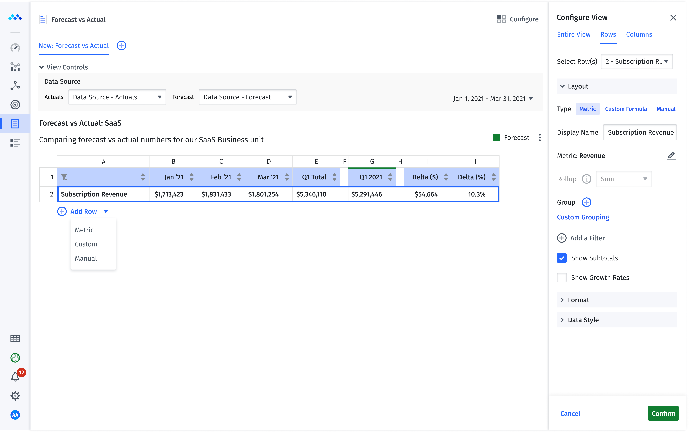
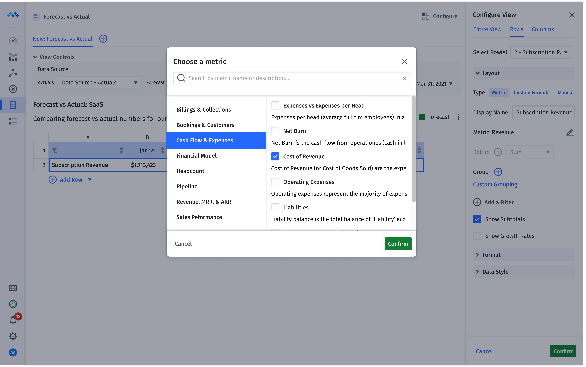
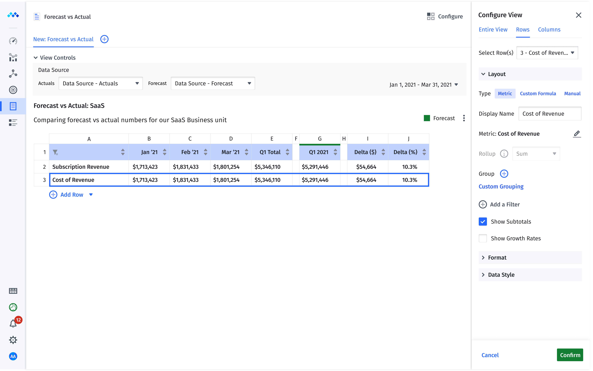
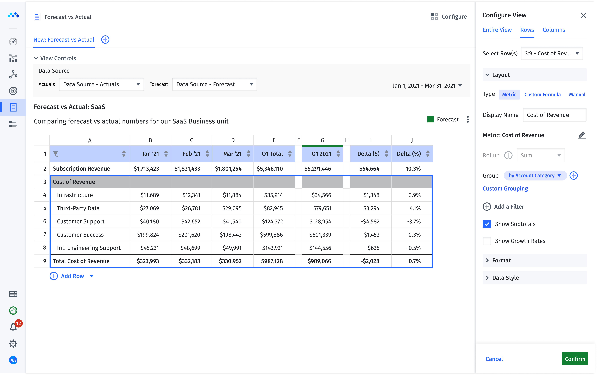
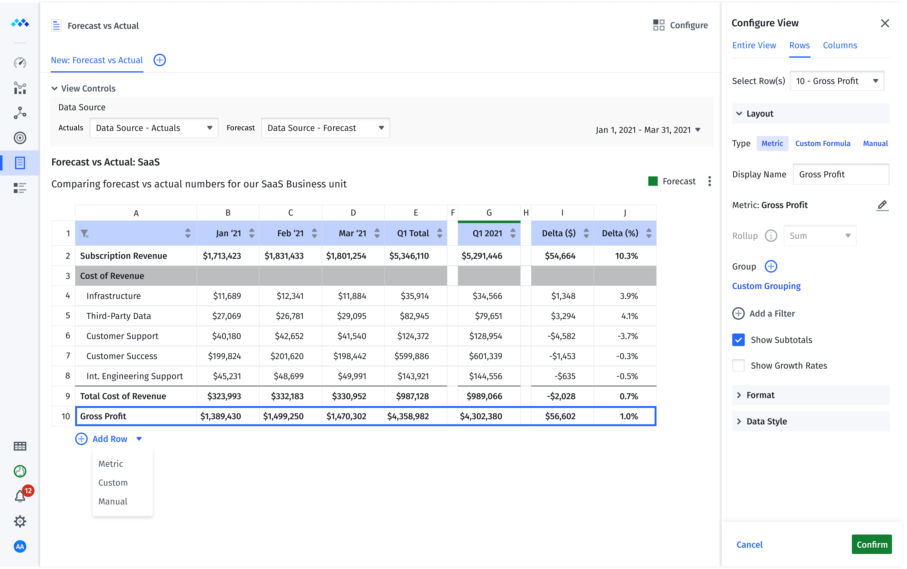
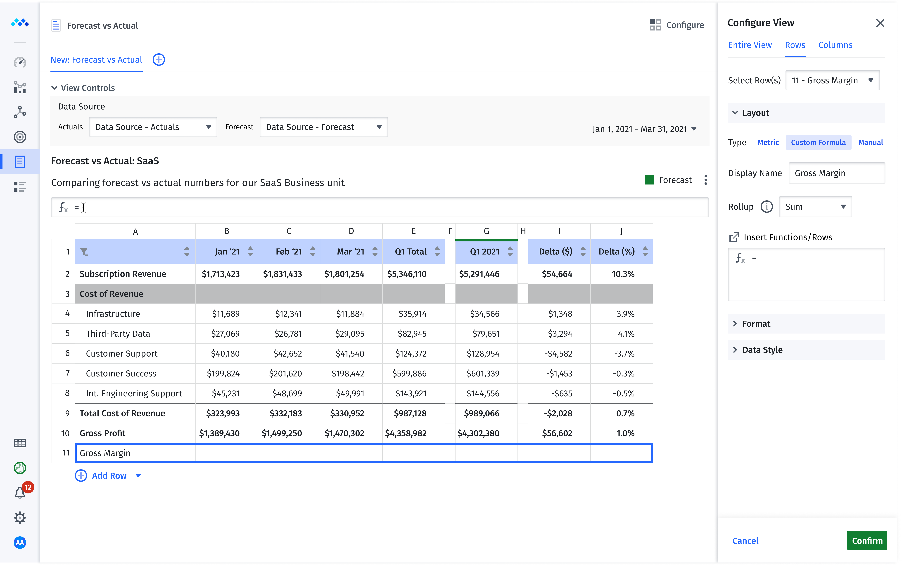
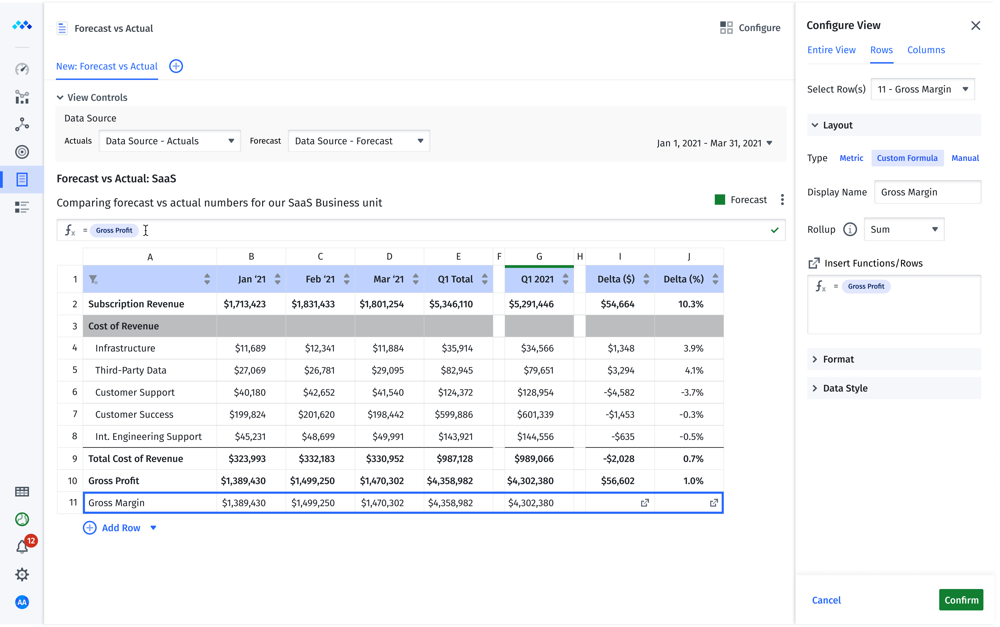
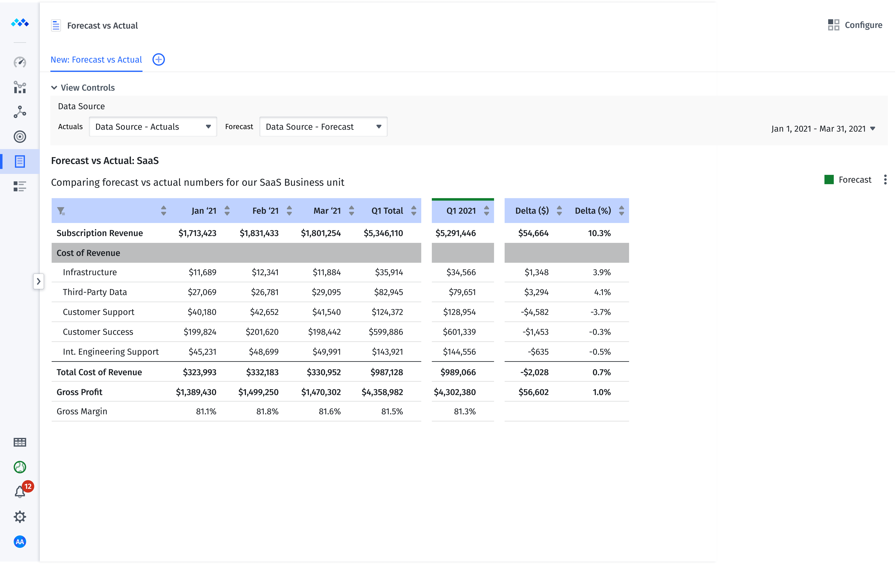

1. Definining the Problem
While Mosaic was already seamlessly streaming client data into standard financial reports, users were clamoring for the ability to customize the layout, metrics, and styling of these reports for investors, board members, and other stakeholders. As a result, users were moving out of Mosaic, back into Excel for this level of customizability.
The question became, "How do we afford this level of flexibility in Mosaic, so our users can continue to avoid the data quality headaches characteristic of Excel based reporting?"
2. Fast-Iterating Wireframes
Having worked with our customers to gain a sufficient understanding of their difficulties, the next challenge was to understand what the idea solution would look and feel like.
With our customers knowing what they wanted to accomplish, but not exactly how Mosaic would accomplish it, we began iterating over simple wireframes to home in on an ultimate UX solution.
In addition to quick time to delivery, wireframes at this stage offer the advantage of focusing the conversation on features, functionality, and layout, without getting bogged down in styling and other cosmetic elements too early in the process.


3. Hi-fi Interactive Prototyping
After several wireframe iterations, we had the buy-in we needed to invest in hi fidelity prototypes. These both gave our customers a real world sense of how these custom reports would look and feel in Mosaic, and supplied our engineering team with pixel-perfect specs for front-end implementation.








